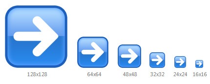
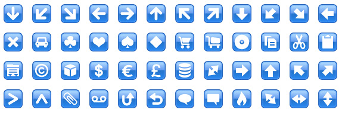

Web Illustrations - Axialis Object Pack #5 for Icons
Copyright ©2008 Axialis Software - All Rights Reserved
 Description
Description
Object Pack #6 is a collection of 2532 objects (read more about objects) designed to create high-quality icons for websites. By using drag & drop in IconWorkshop combine objects to create in seconds icons for your websites. With this pack create automatically a set of icons by using a new feature of IconWorkshop which permits to merge a list of symbols over a fixed background. It contains 205 different symbols in several sizes and colors as well as hundreds of backgrounds. The possibilities are almost infinite!
Here are examples of icons that can be done in a few minutes:
Creating icons from the objects included in the pack is easy. This is done by composing background bases and symbols using simple mouse drag & drops. The image objects are provided in 128x128 resolution for hi-quality results after the downscaling:
Using image objects to create an illustration icon
 Available sizes
Available sizes
You can create illustrations for websites in all sizes up to 128x128 without quality loss. You can even create very small sizes 14x14 or 12x12 for perfect integration in text lines:
Illustrations can be created at any size  |
Integration in text lines Here is an example of illustration icons embedded in texts. Recommended sizes are 14x14 for titles (
|
 Create several icons of the same type
Create several icons of the same type
The pack includes 205 symbols in 2 sizes (full size for square/rounded bases and 75% reduced size for circle bases). IconWorkshop permits creating a list of icons of the same type by merging a fixed base with different symbols. With this method you create all the icons you need for your website in seconds (see below). We recommend to follow this tutorial to learn more about this feature.

Several symbols merged with the same base
(one batch operation)
 How to create the icons?
How to create the icons?
The pack is provided with several sample icons created using IconWorkshop. Creation of these icons is really simple using Drag & Drop or Copy/Paste. To learn how to create icons using this object pack, read this article: http://www.axialis.com/tutorials/tutorial-iw022.html
If you want to practice with image objects, we recommend you to recreate the sample icons as described below:
1. Make sure the Librarian is displayed and the "Pack 5 - Web Illustrations" folder is selected.
2. Create a new icon project (choose 128x128 RGB/A format)
3. Create each icon using the images specified below (First image to add is on top of list):
Add Add the following images into your project: 1. Folder "Background Bases/Gradient Border" - "Gradient Border Green Circle.png" 2. Folder "Symbols" - "Plus.png".
|
|
Right Arrow Add the following images into your project: 1. Folder "Background Bases/Glossy" - "Glossy Blue Rounded.png" 2. Folder "Symbols" - "Arrow1 Right.png".
|
|
Add the following images into your project: 1. Folder "Background Bases/Miscelaneous" - "Orb Neon Blue.png" 2. Folder "Symbols - 75%" - "Email.png"
|
|
Down Add the following images into your project: 1. Folder "Background Bases/Border" - "Border Cyan Circle Opaque.png" 2. Folder "Symbols - 75%/Cyan" - "Arrow1 Down.png"
|
|
Rss Add the following images into your project: 1. Folder "Background Bases/Miscelaneous" - "Orb Glossy White.png" 2. Folder "Symbols - 75%/Gradient Black" - "Rss2.png"
|
|
 Use the icons on your website
Use the icons on your website
If you want to add illustration icons on your website we recommend to create GIF images. Axialis IconWorkshop has been designed to open/save icon files (ICO, ICNS), but a useful feature permits exporting an image included in an icon to a GIF file with color optimization.
Follow this procedure to create a GIF image:
1. We'll create a 32x32 GIF image for inclusion in a web page with a white background (the color of the background is important to create an image with a smooth border). Create a new 32x32 with RGB/A icon: Choose File/New/Windows Icon. In the dialog box select RGB/A and 32x32, click OK. An icon is created with a new 32x32 image.
2. Create your illustration icon by using image objects from the Librarian (read more about objects).
3. Once the icon is done, choose File/Export/Compuserve GIF.
4. A dialog box opens. For a standard GIF, select Colors = "Auto", Palette = "Adaptive", Dither = "Diffusion". In Transparency, we recommend to select "Preserve Transparency".
5. Threshold and Matte are the important settings to make a professional GIF image. First, select in Matte the approximate color of the page background where the icon will be displayed. As the GIF format does not support smooth transparency, this will limit the "halo" and "aliasing" effect around the icon. In Threshold, adjust the level of the transparency frontier around the icon. You see the preview in the box below while you adjust the slider. We recommend to adjust it arround 25% for good results.
6. When done, click OK. Select the location and filename of the GIF file to create.
7. You're done! Now include the illustration image in your HTML page.
 License agreement
License agreement
All the object remains properties of Axialis. However, you can use them without royalties to create icons for any purpose as long as you respect the User License Agreement: http://www.axialis.com/objects/agreement.html